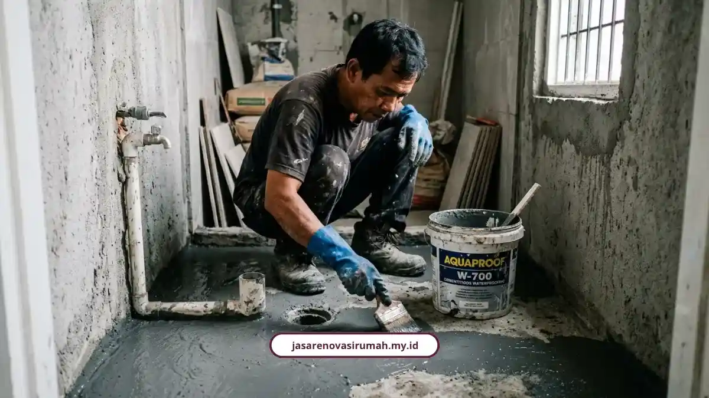
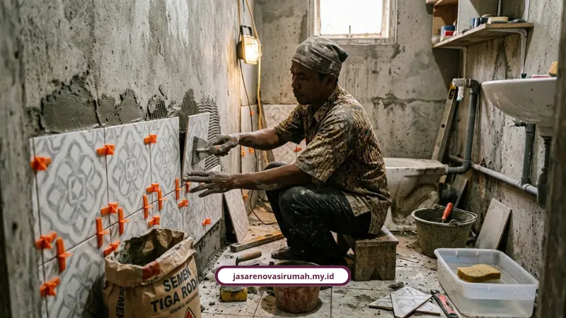

Biaya renovasi kamar mandi Malang berkisar Rp6.500.000 sampai Rp14.000.000 per unit, tergantung ukuran dan tingkat kerusakan. Angka ini sudah mencakup bongkar keramik lama sampai pasang sanitari baru.
Kamar mandi itu ruangan kecil yang sering dianggap remeh, sampai akhirnya bocor merembes ke plafon ruang tamu. Baru deh panik. Inilah alasan pentingnya mengetahui estimasi biaya sejak awal.
Dengan perencanaan yang tepat, Anda bisa menghindari pemborosan akibat pipa bocor, waterproofing yang diabaikan, atau keputusan desain yang berubah di tengah pengerjaan.
Mengapa Biaya Renovasi Kamar Mandi Bisa Bervariasi?
Biaya bervariasi karena tergantung tiga hal utama: ukuran ruangan, tingkat kerusakan, dan pilihan material. Kamar mandi 2x2 meter jelas beda biaya dengan yang 1,5x1,5 meter.
Berdasarkan data lapangan kami di Malang Raya, berikut rincian per tingkat renovasi:
- Renovasi ringan: Rp1.200.000 - Rp1.800.000/m² untuk cat ulang, ganti keramik, dan perbaikan sanitasi dasar.
- Renovasi sedang: Rp2.000.000 - Rp3.200.000/m² untuk ubah tata letak, ganti keramik total, dan sanitari lengkap.
- Renovasi total/berat: Rp3.500.000 - Rp4.500.000/m² untuk bongkar total, saluran air baru, dan waterproofing ulang.
Jika Anda ingin melihat gambaran biaya renovasi rumah secara menyeluruh, cek panduan jasa renovasi rumah Malang dengan RAB transparan yang mencakup seluruh bagian rumah.
Estimasi Biaya Berdasarkan Ukuran Kamar Mandi
Estimasi biaya berbeda-beda tergantung luas ruangan, mulai dari kamar mandi mungil 3 meter persegi sampai yang cukup lega 6 meter persegi. Berikut gambaran umum:

| Ukuran kamar mandi | Spesifikasi | Estimasi biaya |
|---|---|---|
| 1,5 x 2 m (3 m²) | Renovasi ringan sampai total | Rp5 juta - Rp30 juta |
| 2 x 2 m (4 m²) | Standar sampai menengah | Rp7 juta - Rp22 juta |
| 2 x 3 m (6 m²) | Menengah sampai premium | Rp10 juta - Rp55 juta |
Untuk paket standar kamar mandi 2x2 meter, estimasi biaya kami berada di kisaran Rp6.500.000 sampai Rp14.000.000 per unit, sudah termasuk bongkar keramik lama, waterproofing, keramik dinding dan lantai, kloset duduk baru, serta instalasi shower.
Simulasi Biaya Borongan Kamar Mandi Sederhana
Simulasi biaya borongan membantu Anda membayangkan total pengeluaran nyata, bukan cuma kisaran harga per meter. Berikut contoh dari lapangan.
Kamar mandi sederhana 2x2 m (shower + kloset jongkok)
- Estimasi waktu pengerjaan: 6 hari dengan 2 tukang.
- Estimasi total biaya (material, upah, dan jasa 10 persen): sekitar Rp4.543.000.
Kamar mandi modern/kering 1,5x1,5 m (kloset duduk modern)
- Estimasi waktu pengerjaan: 4 hari dengan 2 tukang.
- Estimasi total biaya (material, upah, dan jasa 10 persen): sekitar Rp3.932.500.
Untuk borongan penuh dari nol dengan spesifikasi standar, harga dipatok mulai Rp1.500.000 per meter persegi. Kamar mandi seluas 4 meter persegi misalnya, estimasinya sekitar Rp6.000.000.
Waterproofing Tidak Boleh Dilewatkan
Waterproofing tidak boleh dilewatkan karena air yang meresap ke beton dapat merusak struktur dinding dan plafon secara perlahan. Kerusakan ini sering tidak terlihat sampai sudah parah.
Beberapa item biaya terkait pekerjaan basah di Malang:
- Bongkar keramik lama: Rp50.000 - Rp100.000/m².
- Waterproofing sebelum keramik baru: Rp55.000 - Rp150.000/m².
- Keramik lantai standar anti-slip: Rp130.000 - Rp220.000/m².
- Kloset duduk standar: Rp1.500.000 - Rp3.500.000/unit.
Penggunaan waterproofing berkualitas adalah investasi wajib sebelum pemasangan keramik agar air tidak meresap ke lapisan beton.
Tips Menghemat Biaya Tanpa Mengorbankan Kualitas
Tips hemat yang paling ampuh adalah menghindari pemindahan posisi saluran pipa dan floor drain. Memindahkan posisi ini otomatis menambah biaya bongkaran dan instalasi pipa baru yang signifikan.
Cara lain yang bisa dipertimbangkan:
- Gunakan plesteran khusus kedap air di area dinding bawah agar cat di ruangan sebelah tidak mudah mengelupas.
- Pertimbangkan metode tile-on-tile, yaitu memasang keramik baru di atas keramik lama dengan perekat khusus, untuk menghemat waktu dan biaya bongkar.
- Hitung kebutuhan keramik dengan rumus luas area dibagi luas satu keping, ditambah cadangan 10 persen untuk potongan.
Meski begitu, penghematan seperti ini paling aman kalau dihitung oleh tim yang paham struktur, bukan sekadar tukang harian. Detail teknis semacam ini biasanya sudah masuk dalam RAB transparan renovasi yang kami susun sejak survei awal.
Kesimpulan: Kamar Mandi Nyaman Tak Harus Bikin Kantong Bolong
Renovasi kamar mandi memang kelihatan sepele, tetapi kalau salah hitung bisa menjadi proyek yang menguras uang dan waktu. Dengan gambaran biaya di atas, setidaknya Anda punya patokan sebelum mulai berbicara dengan tukang.
Kami menangani renovasi kamar mandi dengan RAB rinci sejak survei pertama, lengkap dengan garansi struktur resmi 3 bulan. Cek langsung layanan renovasi kami untuk konsultasi dan survei lokasi gratis di Malang Raya.
Hubungi kami di 0889-8964-3555 atau email info@jasarenovasirumah.my.id untuk jadwalkan survei kamar mandi Anda.